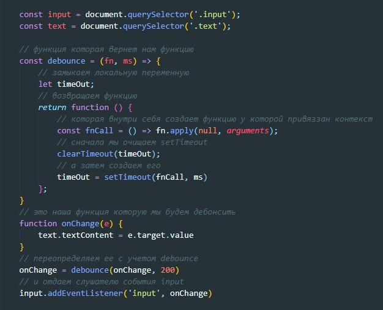
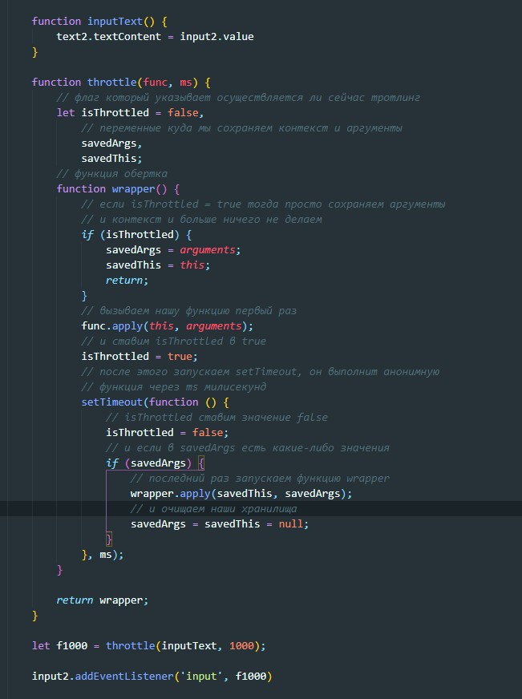

Debounce функции - означает, что все вызовы будут игнорироваться до тех пор, пока они не прекратятся на определённый период времени. Только после этого функция будет вызвана. Например, если мы установим таймер на 2 секунды, а функция вызывается 10 раз с интервалом в одну секунду, то фактический вызов произойдёт только спустя 2 секунды после крайнего (десятого) обращения к функции.
пример
разьяснение
Что здесь произошло? Идем сверху вниз. Функция debounce нам вернула функцию, допустим мы ее вызвали (начали вводить текст в поле input), создалась переменная timeOut, затем создалась функция fnCall, после этого очистится clearTimeout (clearTimeout от undefined вернет нам ничего, т.е. ничего страшного) после этого в нашу замкнутую timeOut запишется setTimeout который запустит нашу функцию через какое-то количество времени. Что происходит далее. Мы продолжжаем вводить текст и наша функция фызовется еще раз и здесь так же читаем сверху вниз. Сначала создастся функция fnCall, затем очистится clearTimeout (timeOut у нас в замыкании а это значит что обращение быдет к той же переменной). Значит тот timeOut = setTimeout(fnCall, ms) который мы определили в предыдущий раз не успеет выполниться, вместо него будет создан новый и он так же будет вызван только если пользователь прекратит вводить текст, иначе каждый раз setTimeout(fnCall, ms) будет очищаться до того как будет вызван.
Throttling функции - означает, что функция вызывается не более одного раза в указанный период времени (например, раз в 10 секунд). Другими словами ― троттлинг предотвращает запуск функции, если она уже запускалась недавно. Троттлинг также обеспечивает регулярность выполнение функции с заданной периодичностью.
разьяснение
Мы начинаем вводить текст и запускается функция wrapper. Т.к изначально isThrottled = false то условие if не выполняется. Далее запускается наша функция которую мы передали тротлу. После этого isThrottled устанавливаем true и запускаем setTimeout, который через 1 секунду запустит нашу функцию wrapper (рекурсия) если в savedArgs что то было сохранено, но там пока ничего нет. мы продолжаем вводить текст и наша функция wrapper снова запускается но на этот раз isThrottled в значении true и соответственно мы записываем в savedArgs и savedThis значения и прерываем функцию. Так будет повторяться пока не пройдет секунда и не выполнится предыдущий setTimeout. setTimeout приведет isThrottled в false и функция func выполнился. Таким образом наша функция func будет выполняться 1 раз в секунду, при том что ее вызов осуществляется много чаще.